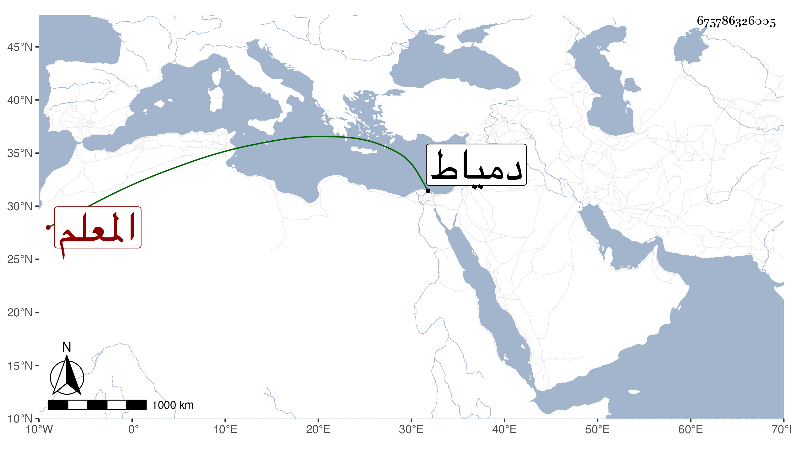

0902Sakhawi.DawLamic.ITO20230111-ara1.EIS1600.675786326005
Biography ID: 675786326005
532
محمد بن علي بن قطلوبك ناصر الدين بن العلاء الفازاني والد عبد العزيز الماضي ويعرف بالصغير بمهملة مضمومة ثم معجمة مفتوحة ثم تحتانية مشددة تصغير صغير ، ويقال له أيضا المعلم لتقدمه في تعليم الرمي بالنشاب وبراعته فيه علما وعملا بحيث قيل إنه لم يخلف بعده فيه مثله مع مشاركة ومحاضرة حسنة وصوت طري وقراءة في المحراب جيدة . وهو من أصحاب الظاهر جقمق قبل تملكه ولذا قربه بعده وصار من ندمائه ومسامريه وولاه في أوائل دولته نيابة دمياط ثم عزله وأهانه قليلا ثم أعاده إلى مرتبته بل جعله من جملة الحجاب فلما مات لزم داره حتى مات في ليلة الجمعة ثالث عشري ذي الحجة سنة ثمان وخمسين ودفن من الغد وقد زاد على الثمانين وانتعش ابنه بإرثه رحمه الله .
